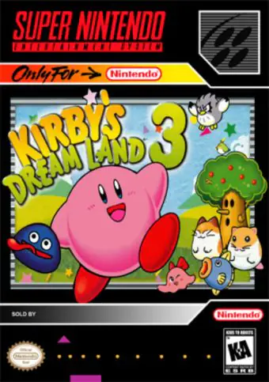

Detalhes:
O jogo segue as aventuras de Kirby, um pequeno personagem rosado que vive no pacífico reino de Dream Land. Um dia, o malvado King Dedede rouba toda a comida de Dream Land, incluindo a estrela mágica que dá a Kirby seus poderes. Determinado a recuperar a comida e a estrela, Kirby parte em uma jornada através de vários estágios para derrotar King Dedede.